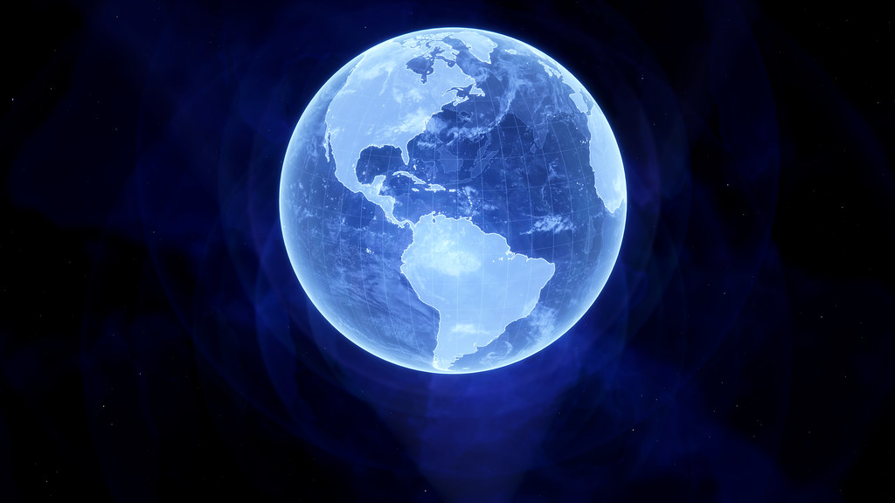

Histórias sobre solidão, tristeza, estar sozinho, melancolia, mundos perfeitos, mundos solitários, mundos falsos, mas bons...
Stories about loneliness, sadness, being alone, melancholy, perfect worlds, lonely worlds, false but good worlds...
Author(Autor):(Click, Clique)
Chapters, Capítulos: 1
Date(Data): 01/10/2019
Capítulos PT-BR
Chapters EN-US
Perfect World PT-BR
---
História de um Mundo Perfeito pra se viver, um mundo distópico, perfeito, estranho, falso.

---
Um mundo perfeito:
Um mundo onde não há fome, sede, sono, sangue, dor, onde todos são felizes, é um mundo onde eu moraria, um mundo onde eu seria feliz.
Um mundo onde eu posso fazer qualquer coisa, onde moro dentro de uma nave espacial, com uma geladeira que gera comida infinita, ou melhor, uma nave espacial onde eu posso desativar minha fome.
Um mundo em que não consigo ouvir cães latindo porque isso me irrita, que me deixa com raiva e minha cabeça dói, não gosto de ouvir as pessoas conversando, talvez porque não tenha dormido o suficiente.
Um mundo, um mundo perfeito com o qual sonho, onde posso fazer tudo o que quero e ter tudo o que quero, tudo o que acho que preciso para viver feliz, um computador com acesso à internet, onde posso assistir coisas, escrever coisas, tocar coisas, conversar com pessoas, ouvir coisas, isso é tudo que eu gosto, o computador, a internet é minha casa principal, eu, Izaque Sanvezzo, adoraria viver uma vida assim.
Um mundo, um mundo perfeito para mim, não para os outros, com computador e internet, sem fome, sede ou sonolência, apenas eu e um computador, eu também posso ser o computador, que seria estranho e incrível ao mesmo tempo.
Outro mundo diferente, mas os mundos que quero criar falam apenas sobre o que quero, e o que quero?, ainda não tenho certeza... quero um computador para acessar a internet, porque não gosto da minha vida sem ela, o computador + a Internet é uma chave e um portal para a vida na caixa de areia(sandbox), onde você pode fazer tudo, sem sentir na pele, ouvir, ver, interagir com o teclado e o mouse, mas você não pode tocar ou sentir, ou estar lá, mas isso não é importante para mim, é claro, eu adoraria viajar para a internet, para este mundo de infinitas possibilidades, eu não quero ter esse corpo, esse... isso... eu nem quero falar sobre...
É por isso que gostaria de escrever sobre esse mundo perfeito, mas não sei se outras pessoas gostariam de ler isso. A Terra atual me faz pensar na cor verde, natureza, árvores, folhas.
Esse mundo perfeito na minha cabeça me faz pensar na cor azul, hologramas, vida falsa, perfeita, tecnologia, sandbox, multi-verse, brincar de deus.
E é isso que eu sinto, tenho uma pergunta para você, leitor, você concorda comigo?, você tem uma mentalidade ou uma opinião como a minha?, você leria uma história sobre esse mundo perfeito se eu fizesse uma? me responda aqui no site ou em uma das minhas contas de mídia social, Discord, Twitter: @The_Snakes90, obrigado por ler minha... meu... desabafo, eu acho, obrigado por ler essa história ruim, é ruim porque me lembra os maus momentos (hoje) que nunca desaparecem, obrigado pela leitura, espero que você tenha um ótimo dia!, ou se você vai dormir agora, boa noite, bom sono, bom descanso, eu te amo! <3
Feito em: 01/10/2019.
Perfect World EN-US
---
A story about a Perfect World to live, a dystopic world, perfect, weird, fake.
---
A Perfect World:
A world where there is no hunger, no thirstiness, no sleepiness, no blood, no pain, where everyone is happy, that's a world where I would live in, a world where I would be happy.
A world where I can do anything, where I live inside a spaceship, with a fridge that generates infinite food, or better, a spaceship where I can deactivate my hunger.
A world where I can't hear dogs barking because that irritates me, that makes me angry and my head hurt, I don't like to hear people talking, maybe because I haven't had enough sleep.
A world, a perfect world that I dream off, where I can do everything I want and can have everything I want, everything that I think I need to live happily, a computer with access to the internet, where I can watch stuff, write stuff, play stuff, talk to people, listen to stuff, that's all I like, the computer, the internet is my main home, I, Izaque Sanvezzo, would love to live a life like that.
A world, a perfect world for me, not for others, with computer and internet, no hunger, thirstiness or sleepiness, just me, and a computer, I can be the computer too, that would be weird and awesome at the same time.
Another, different world, but the worlds I want to create talk only about what I want, and what I want?, I'm still not sure about that... I want a computer to access to the internet, because I don't like my life without it, the computer + internet is a key and a portal to a sandbox life, where you can do everything, without feeling it in your skin, you can hear, see, interact with keyboard and mouse, but you can't touch or feel, or be there, but that's not important to me, of course, I would love to travel to the internet, to this world of infinite possibilities, I don't want to have this body, this... this... I don't even want to talk about...
That's why I would like to write about this perfect world, but I don't know if other people would like to read that, the current Earth makes me think of the color green, nature, trees, leaves.
This perfect world in my head makes me think of the color blue, holograms, fake life, perfect, technology, sandbox, multi-verse, playing god.
And that's what I feel, I have a question for you, reader, do you agree with me?, do you have a mindset or an opinion like mine?, would you read a story about this perfect world if I made one? answer me here on the website or to me on one of my social media accounts, Discord, Twitter: @The_Snakes90, thank you for reading my... vent, I guess, thank you for reading this bad story, it is bad because it reminds me of bad times (today) that will never go away, thanks for reading, hope you have a great day!, or if you're gonna sleep now, goodnight, good sleep, good rest, I love you! <3